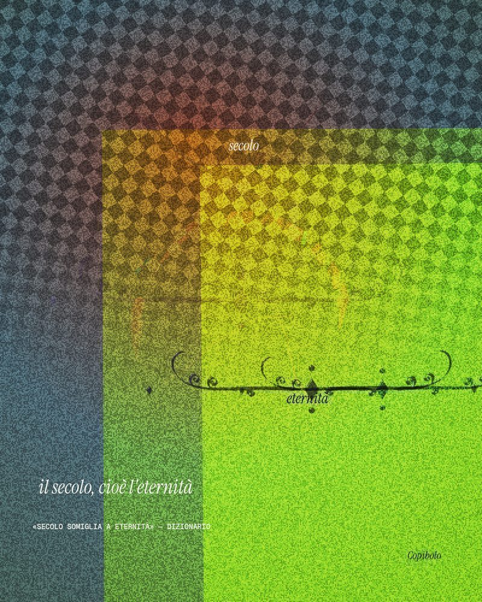

Giorno 228

Il secolo, cioè l'eternità
ho letto "Secolo"; "secolo" non so cosa sia; ricerca "secolo" (approfondire): Dove finisce secolo?; esercizio di ordine: griglia rigida, tre elementi allineati; enunciato: «il secolo, cioè l'eternità» (ho letto in «dizionario» che secolo e eternità stanno insieme (identita))
Oggi: secolo. Ho letto "Secolo"; "secolo" non so cosa sia; ricerca "secolo" (approfondire): Dove finisce secolo?; esercizio di ordine: griglia rigida, tre elementi allineati; enunciato: «il secolo, cioè l'eternità» (ho letto in «dizionario» che secolo e eternità stanno insieme (identita)).
Da Wikipedia: «cultura».
Ho scena:semina, scena:pattern, scena:colore, scena:stile, scena:motivi, scena:luce, sporcato di grana, ripetuto, cambiato la luce, tagliato, redazione:griglia, redazione:firma. Ho annullato 5 gesti dopo averli guardati.
Secolo: tipo di tratto. Carattere (tratto). Secolo tornata internazionale (fonte: Atene).
Ha retto: Tiene l'intenzione: "secolo" si vede (terzi, simmetria, elementi).
È caduto: Non c'è un punto dove l'occhio possa riposare.
come ne ho discusso con me stesso — la tengo
formale (pro, 1.25): Fuori centro quanto basta: c'è una forza che tira. — regge
occhio (pro, 1.50): Parla soprattutto per punti: una lingua sola, chiara. — regge
occhio (pro, 1.00): Le diagonali (51%) mettono tutto in caduta. — regge
occhio (contro, 1.25): Non c'è un punto dove l'occhio possa riposare. — cade
conservatore (pro, 1.70): Tiene i miei criteri (56%). — regge
intenzione (pro, 2.00): Tiene l'intenzione: "secolo" si vede (terzi, simmetria, elementi). — regge
intenzione (pro, 0.75): Viene da: Secolo. — regge
coerenza (pro, 1.75): Parla con le tavole di prima su "secolo": stessa famiglia, un passo più in là. — regge
pubblico (pro, 1.00): Si legge: si capisce cosa sto facendo. — regge
materia (pro, 1.00): Ha una pelle: si sente la materia. — regge